闻乐 发自 凹非寺
量子位 | 公众号 QbitAI
AI圈的节奏已经快到让人产生幻觉了。
Karpathy分享的个人知识库爆火出圈，48小时就有人拿着完全体送货上门。
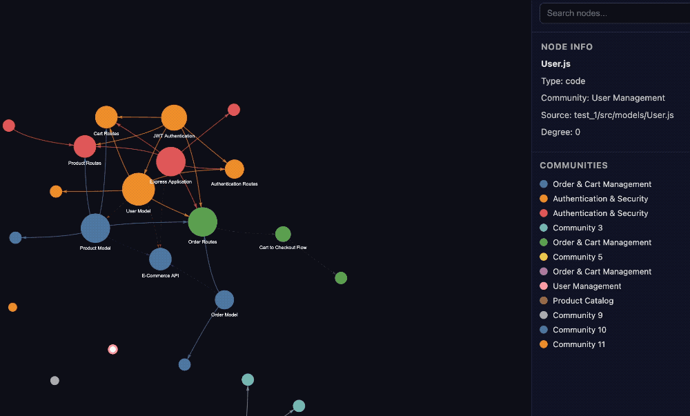
Graphify，一款零配置、全模态、本地跑、还特能省token的知识图谱工具，GitHub开源狂揽2k+ Star。
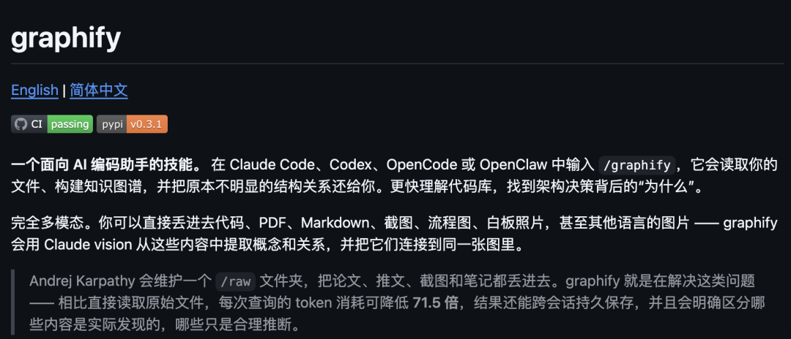
不仅能自动构建可导航知识图谱、自带反向链接和关系溯源，更实现71.5倍token消耗节省，直接把卡神的/raw笔记法进化到了完全体。
万物皆可图谱化
卡神那套爆火的知识库，核心是一套不用复杂向量数据库的轻量化工作流。
靠raw/目录存论文、代码、截图等原始资料，再通过LLM自动生成带交叉引用的Wiki文档，配合定期体检维护，慢慢搭建起一个能持续生长、越用越好用的知识体系。
思路确实是好，但实际落地也有很多待优化的地方。
比如，raw文件夹需要手动整理归类，新资料添加得全程跟进配合；
反复读取原始文件会带来较高的token消耗，连卡帕西都说：大部分token已经不跑代码了；
而且整套方法目前还停留在手动工作流阶段，没有专门工具封装，需要用户一步步引导AI执行，操作步骤相对繁琐。
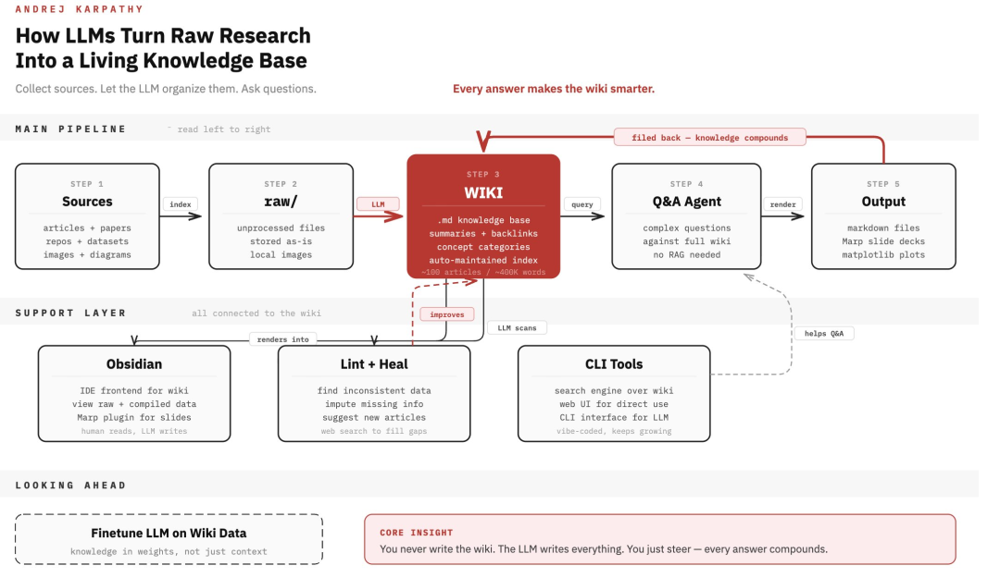
这不，有痛点就有解决办法，卡神知识库上线48小时后，开源社区就交出了完全体答卷。
Graphify对这套工作流做了全方位的工具化升级。
首先是全模态自动图谱化，从源头省去了手动整理的麻烦。
Graphify内置了统一的多模态处理管线，能对不同类型的文件实现针对性的自动化解析。
对代码文件通过tree-sitter做本地AST解析直接提取结构信息；对PDF、Markdown等文档自动拆分文本与语义单元；对截图、流程图、白板照片等视觉内容则调用Claude Vision 完成概念提取与关系识别。
这些都无需人工预处理、无需分类、无需筛选，丢进文件夹即可统一入谱。
相比之下，卡神的raw文件夹仍需要用户手动规整资料、手动触发处理，Graphify 则从文件扫描到图谱生成全程自动化，真正实现了万物皆可图谱化
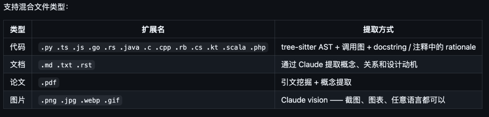
在此基础上，它还依靠本地AST解析与并行LLM子代理语义提取的双阶段流程，实现了71.5 倍Token消耗优化。
第一阶段对代码文件做确定性AST提取，全程在本地完成，不调用LLM、不产生任何Token消耗；
第二阶段仅对文档、论文、图片等非代码内容，通过并行LLM子代理做一次语义抽取，同时搭配SHA256缓存机制，重复运行时只处理变更过的文件，从根本上避免了重复计算与无效开销，把Token真正用在推理上。
在包含卡帕西的仓库文件、5 篇论文、4 张图片共52 个文件的混合语料场景下，使用Graphify后每次查询的Token消耗，相比直接读取原始文件降低了71.5倍。
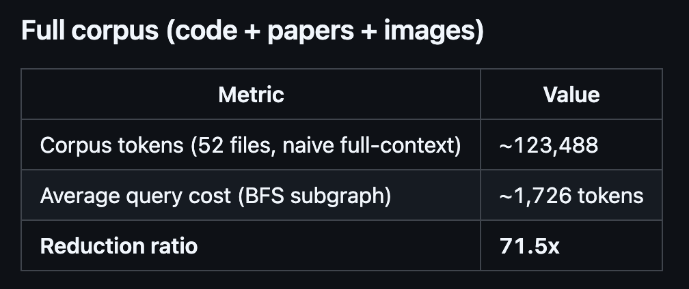
更友好的是，它全程无需向量数据库、无需嵌入计算、也不用复杂配置，做到了开箱即用。
它的聚类基于图拓扑完成，依靠Leiden社区发现算法按边密度划分社区，无需依赖embeddings，自然也省去了向量数据库的部署与维护成本。
只需要在目标文件夹执行/graphify .这一条命令，指向任意文件夹就能一键生成完整知识图谱，附带交互式HTML、分析报告与可持久化数据文件，极大降低了上手门槛。
同时，Graphify还为每一条内容关联都加上了清晰的类型标注，区分原文提取、模型推断与歧义关系，并附带置信度，让知识来源透明可查、结果更可信。
全平台适配
说完了优点，说说怎么安装。
首先，Graphify实现了全平台适配，Claude Code、Codex、OpenClaw……都能无缝接入使用。
仅需Python 3.10及以上环境，一行命令即可完成全部部署（PyPI包当前暂时叫 graphifyy）：
pip install graphifyy && graphify install
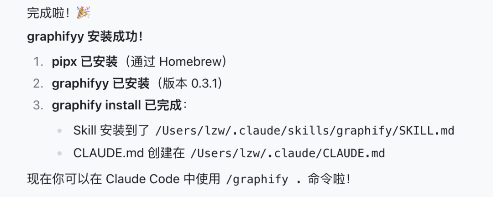
如果你是在龙虾平台，可通过以下命令安装：
graphify install —platform claw
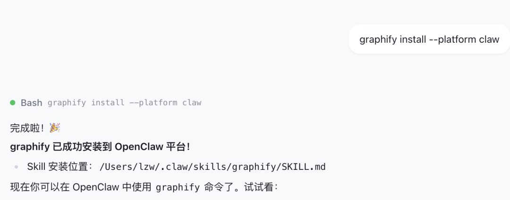
Codex用户：想用上Graphify说的并行LLM子代理提取，必须先在配置文件~/.codex/config.toml的[features]里打开multi_agent = true，不然跑不起来并行模式。 OpenClaw用户：这个平台对多代理并行的支持还很初级，没完善，所以只能用顺序挨个提取，没法并行，速度和效率会差一些。
安装完成后，进入你想要图谱化的目录，用/graphify .命令一键生成即可。
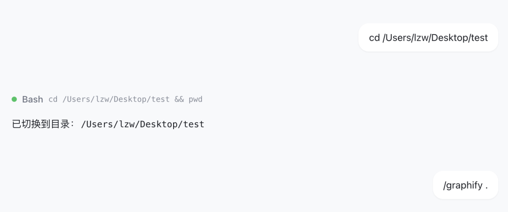
执行完命令，当前目录里就会出现graph.html文件，在浏览器中打开就能看到可交互的知识图谱。
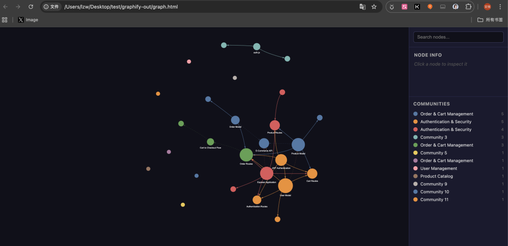
它还支持—watch文件监听模式 ，代码文件改动后会立即触发AST重新解析，实时更新图谱；文档、图片变更则会主动提醒用户执行增量更新。
同时还能安装Git钩子，在代码commit提交、分支切换后自动重建图谱，无需额外开启后台进程。
配合/graphify —update增量更新命令，新资料加入时无需重建整个图谱，只更新相关节点和关联，让知识库真正实现随资料新增持续生长、越用越完善。
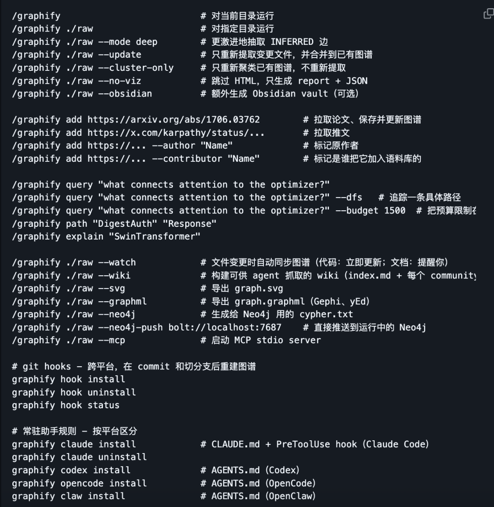
Graphify的作者Safi Shamsi现为伦敦Valent公司的一名AI研究员。
One More Thing
其实卡神的知识库出来之后，很多人都开始跟风复刻，还有人做了一款基于个人文件的“活维基”工具。
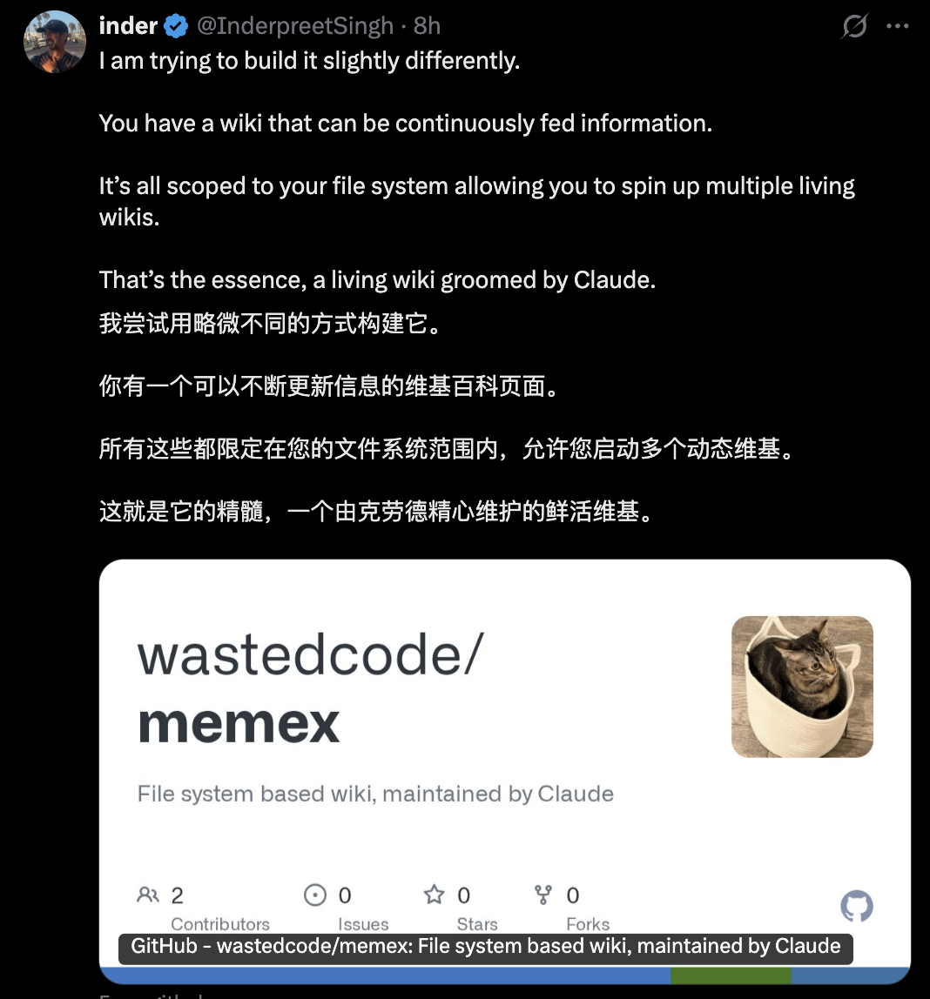
AI圈现在以小时为单位的迭代玩法，只能说疯狂，太疯狂。
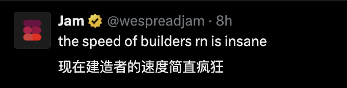
项目地址：https://github.com/safishamsi/graphify/blob/v3/README.zh-CN.md
参考链接：https://x.com/socialwithaayan/status/2041192946369007924
一键三连「点赞」「转发」「小心心」
欢迎在评论区留下你的想法！
— 完 —
🌟 点亮星标 🌟